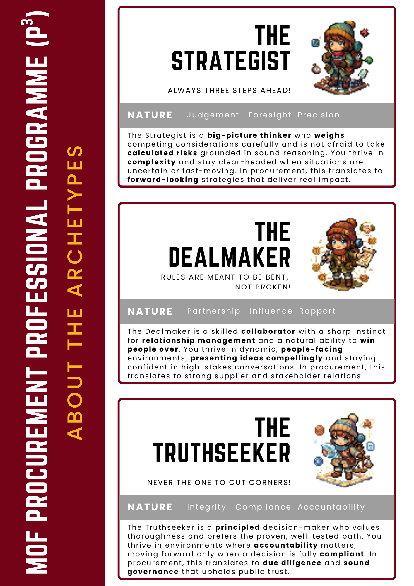

5 Questions · ~ 2 Minutes
Which Procurement Archetype
Are You?
Curious what kind of decision-maker you are? Take the Grand Food Bazaar Quiz to find out your personality.
Curious what kind of decision-maker you are? Take the Grand Food Bazaar Quiz to find out your personality.
